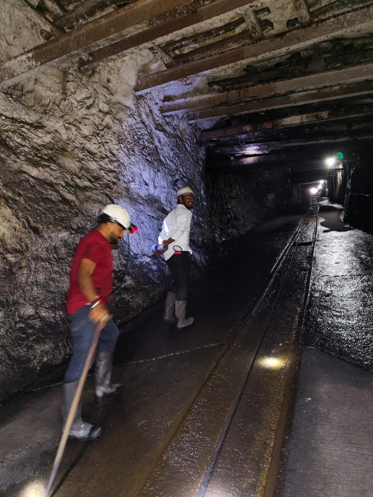
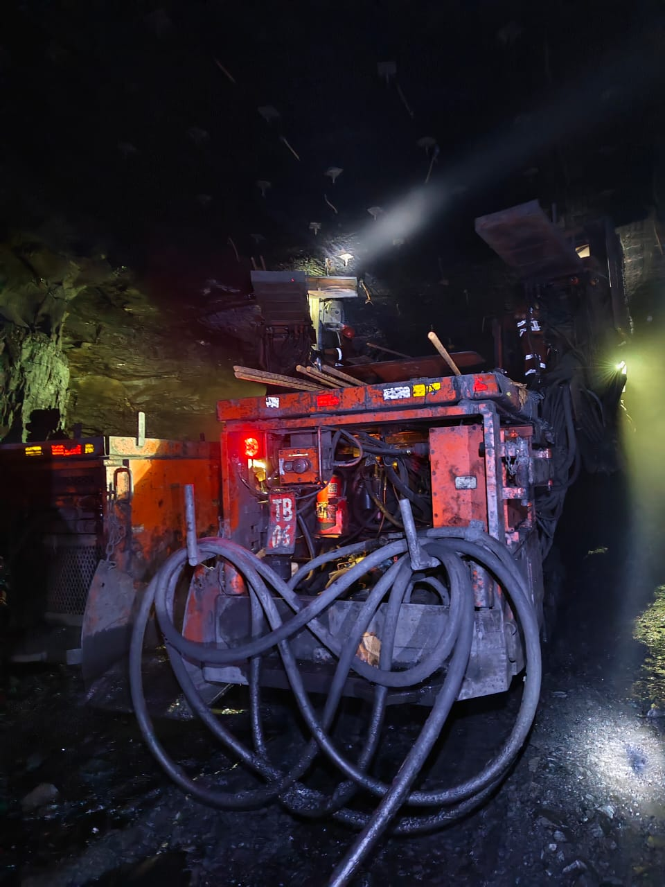
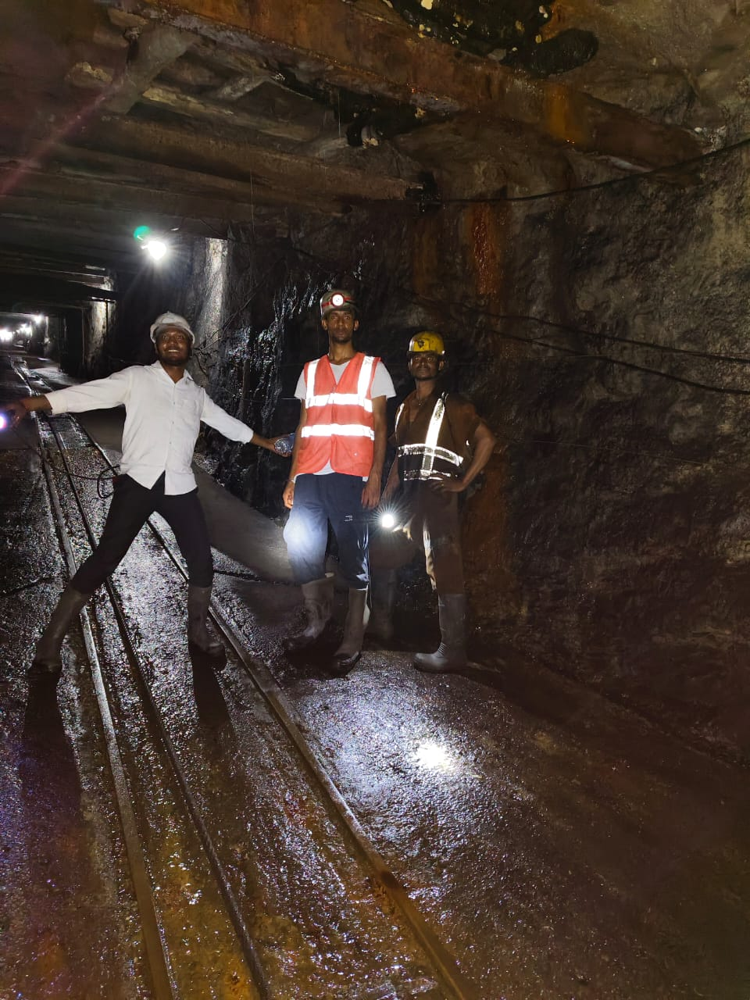
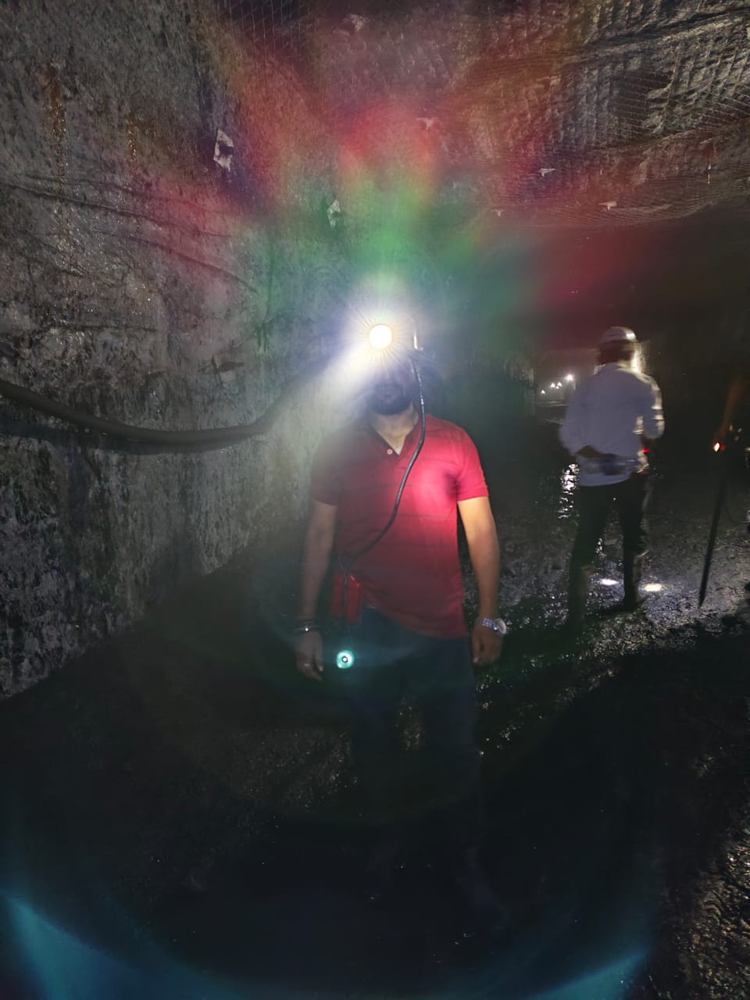

Field Journey Start to End
10 Images from Main Gate to Deepest Point - Validating RAKSHAK Rover Need - 35deg Incline, 150mm GC, IP65, NoIR YOLOv8, Triple-AI Stack | Team Lead: Ashish Kumar

FIELD 1 - START - Churi Colliery Main Gate Arch
CCL Welcome Gate, Unauthorized Entry Prohibited, muddy coal road, overburden dump - Zero network at bottom observed. Validates long range LoRa & 4G.

FIELD 2 - Outdoor Incline Road
Outdoor rails, 30-35deg climb, stick for support, dust - Need rocker-bogie, 150mm ground clearance.

FIELD 3 - Underground Entrance - Single Man
Steel supports start, dry floor to wet transition - Darkness less than 50 lux - NoIR camera test.

FIELD 4 - Steel Girder Roof Support + Rail
White girders, belt conveyor, coal walls - Roof bolt pattern, engineering - Rover height limit.

FIELD 5 - Wet Rail Team Pose - Mid Point
3 person team on rusty rail, gumboots, reflective vest - Slippery reflection - Team Reborn Innovators field confidence. Lead: Ashish Kumar

FIELD 6 - Slurry Cleaning Working Condition
2 men cleaning coal slurry with stick - Water + mud - Validates IP65, mud clogged wheels.

FIELD 7 - Heavy Machine TB03 TB04 - Mechanized Face
LHD machine, hydraulic hoses, red light, cables on floor - Cable management failure - Rover to replace man near machine.

FIELD 8 - Water-logged Worst Terrain
Deep puddles, 3 men walking away, light vanishing - Worst case mobility - Need 6-wheel rocker bogie + pump.

FIELD 9 - Cap Lamp Glare - Extreme Darkness
Lens flare rainbow, self-rescuer on waist, mesh roof - Beyond lamp zero visibility - CLAHE + NoIR till 5 lux validated.

FIELD 10 - END - Team Darkness Cap Lamp Selfie
Deepest point team selfie with cap lamps, orange high-vis - Complete darkness beyond - YOLOv8 Edge AI 42ms + Triple-AI Stack final validation - Mission Success
FIELD VISIT BY RAKSHAK AI TRINITY FIELD VISIT TEAM | ASHISH KUMAR LEADING THE TEAM
Safe Distance Only | No CCL Endorsement | For SIH 2025 Problem Statement 26025 | Team Reborn Innovators